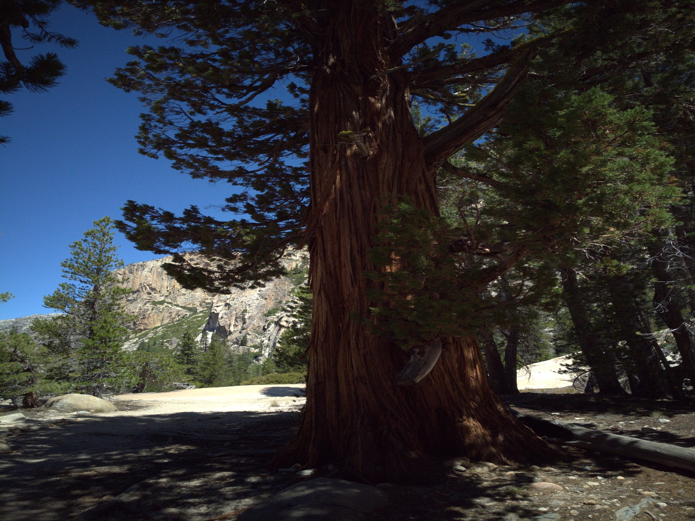
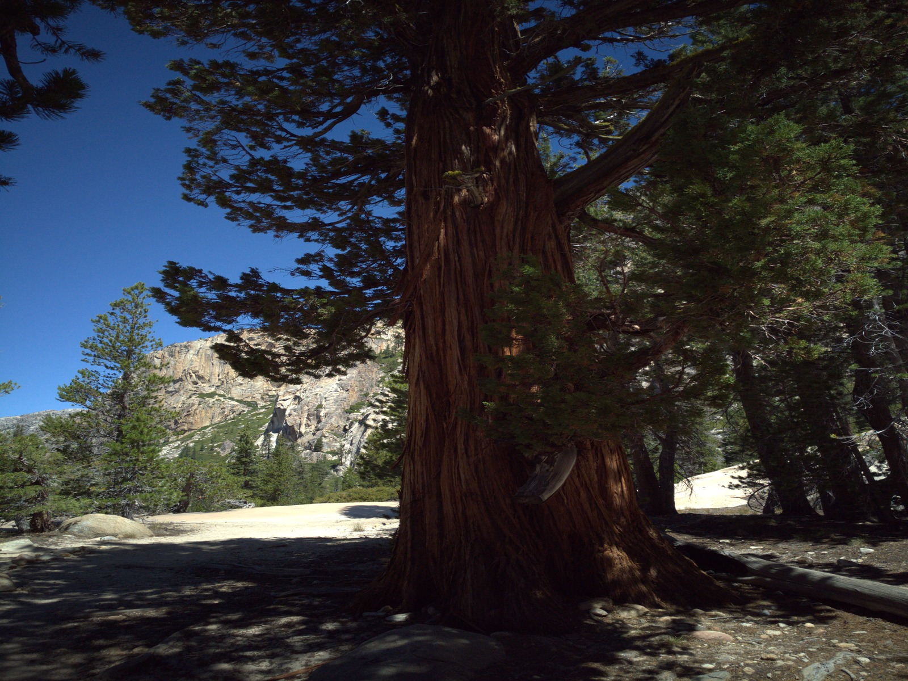

Reference burst
7 real mobile-camera frames
All 7 frames reconstructed
Your photo library
Bursts preserve the moment—and repeat most of the pixels.


Meet PhotoFold
And store only what changes.
Live PhotoFold interface
Step 1
PhotoFold collection complete
Measured, not estimated
7 real mobile-camera frames
Static, motion, and changing-light conditions
Results vary with motion and lighting.
Engineering loop
Predictable · Private · Verifiable
Selected from the local library
Deterministic processing on this device
Every accepted frame remains recoverable
A possible future
PhotoFold found 14 related photo sets.
Keep every photo while reducing repeated visual data.
Keep every shot. Store the scene once—and only what changes.